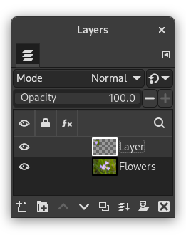
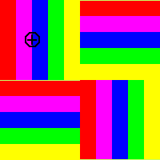

A ferramenta de clonagem usa o pincel ativo para copiar de uma imagem ou textura. Isso possui muitas utilidades: uma das mais importantes é a de reparar áreas com problemas em fotos digitais, ao “pintar sobre” ela com os pixels de outras áreas. Leva um tempo para aprender essa técnica, mas nas mãos de um usuário habilidoso se torna muito poderosa. Outro uso importante é desenhar linhas ou curvas texturizadas: veja exemplos na sessão de Texturas.
Se você deseja clonar a partir de uma imagem, ao invés de uma textura, você precisa dizer ao GIMP de qual imagem você deseja copiar. Você faz isso pressionando a tecla Ctrl e clicando na parte desejada da imagem de origem. Até que você tenha definido a origem dessa forma, você não será capaz de desenhar com a ferramenta de clonagem: o cursor da ferramenta dá essa informação ao mostrar o símbolo  .
.
Se você clonar a partir de uma textura, a textura se torna continua; isso é, quando o ponteiro com o qual você está copiando passa de uma das bordas, então ele vai para a borda oposta da textura e continua, assim as texturas são repetidas lado-a-lado. Quando você clona a partir de uma imagem, isso não acontece: se você ultrapassar as bordas da origem, a ferramenta de clonagem para de produzir qualquer alteração.
Você pode clonar a partir de qualquer local desenhável (isso é, qualquer camada, máscara de camada, ou canal) para qualquer outro lugar desenhável. Você pode até mesmo clonar de ou a partir de uma máscara selecionada, ao trocar para o modo de Máscara rápida. Caso deseje copiar cores que o local de destino não suporta (por exemplo, clonar a partir de uma camada RGB para uma camada indexada ou uma máscara de camada), então as cores serão convertidas para a usando a melhor aproximação possível.
Existem várias formas para ativar a ferramenta:
-
A partir do menu da janela de imagem: → → .
-
Ícone da ferramenta de clonagem na caixa de ferramentas
-
Ao pressionar o atalho de teclado C.
Veja Modificadores de tecla das ferramentas de pintura para uma descrição das teclas modificadoras que possuem o mesmo efeito em todas as ferramentas de pintura.
- Ctrl
-
A tecla Ctrl é usada para selecionar a origem, caso esteja clonando a partir de uma imagem: isso não tem efeito caso esteja clonando a partir de uma textura. Você pode clonar a partir de qualquer camada ou qualquer imagem, ao clicar na imagem, com a tecla Ctrl pressionada, enquanto a camada é ativa (como mostrada na janela de camadas). Caso o alinhamento seja definido para Nenhum, Alinhado, ou Fixo nas opções da ferramenta, então o ponto que você clicar se torna a origem da clonagem: os dados da imagem neste ponto serão usados quando você começar a pintar com a ferramenta de clonagem. No modo de seleção de origem, o cursor muda para um símbolo de cruz:
 .
.
Normalmente, as opções da ferramenta são exibidas numa janela acoplada abaixo da caixa de ferramentas assim que você ativa a ferramenta. Caso isso não aconteça, você pode acessá-las com um clique duplo no ícone da ferramenta, ou a partir do menu da janela de imagem em → → que abre uma janela de opções da ferramenta selecionada.
- Modo, Opacidade, Pincel, Tamanho, Proporção, Ângulo, Espaçamento, Dureza, Força, Dinâmicas, Opções de dinâmicas, Aplicar espalhamento, Pincelada suave, O tamanho do pincel - curva de esmaecimento, Expand Layers
- Veja Opções em comum das ferramentas de pintura para uma descrição das opções da ferramenta que são aplicáveis a todas as ferramentas de pintura.
- Origem
-
A escolha que você fizer aqui determinará se os dados serão copiados a partir da textura exibida abaixo, ou a partir de imagens que você tenha aberto. Na verdade, o uso mais comum da ferramenta é usar a própria camada de destino como fonte: a ferramenta é muito útil para copiar trechos parecidos e esconder detalhes indesejados em fotos, e assim por diante.
- Imagem
-
Se você escolher Imagem de origem, então você precisa dizer ao GIMP qual camada usar como origem, com o Ctrl — clique sobre ela, antes de pintar com a ferramenta.
Se você ativar essa opção, a recuperação não é calculada apenas a partir de valores da camada ativa, mas de todas as camadas visíveis.
O reticulado é completamente explicado no Glossário

Example image showing the cloned pixels in the upper left corner.

Layers dialog showing the new layer with the cloned pixels.
- Textura
-
Clicar no símbolo de textura abre a janela de texturas, onde você pode selecionar a textura para pintar. Essa opção só é relevante caso você esteja clonando a partir de uma textura.
- Alinhamento
-
O modo de alinhamento define a relação entre a posição do pincel e a posição de origem.
Nos exemplos a seguir, nós usaremos uma imagem de origem de onde o trecho a ser clonado será pego, e uma imagem de destino onde o exemplo será clonado (pode ser uma camada na própria imagem de origem).
Figura 14.72. Imagens originais para as opções de alinhamento da clonagem

Nós usaremos o maior pincel com a ferramenta de lápis. A origem é representada aqui pelo círculo com uma cruz dentro.

Uma imagem com apenas um fundo sólido. Nós devemos desenhar três pinceladas de clonagem sucessivamente.
- Nenhum
-
Neste modo, cada pincelada é tratada separadamente. Para cada pincelada, o ponto no qual você clica primeiro é copiado a partir da fonte de origem; não há nenhuma relação entre uma pincelada e outra. No modo não alinhado, pinceladas diferentes normalmente irão se chocar.
Exemplo abaixo: para cada nova pincelada, o ponto de origem volta para sua posição inicial. O mesmo trecho da imagem é clonado todas as vezes.
- Alinhado
-
Neste modo, o primeiro clique que você fizer definirá o espaçamento entre a fonte de origem e o resultado clonado, e todas as pinceladas seguintes usarão a mesma compensação. Além disso, você pode usar quantas pinceladas quiser, e todas elas irão se misturar suavemente entre si.
Se você deseja mudar o espaçamento, selecione uma nova origem (mesmo que seja no mesmo ponto) clicando com a tecla Ctrl pressionada.
No exemplo abaixo, para cada nova pincelada, a origem continua a usar o mesmo espaçamento que a primeira pincelada. Então, não existe nenhum espaçamento de clonagem para a primeira pincelada. Aqui, para as pinceladas seguintes, a origem termina fora da tela da imagem de origem, por isso o aspecto cortado.
- Registrado
-
O modo “Registrado” é diferente dos outros modos de alinhamento. Quando você copia a partir de uma imagem, um clique pressionando Ctrl irá registrar a camada de origem. Então pintar em uma camada de destino irá clonar cada pixel na posição correspondente (com as mesmas coordenadas) da camada de origem. Isso é útil quando você deseja clonar partes de uma imagem de uma camada com a mesma imagem. (Mas lembre-se de que você também pode clonar de uma imagem para outra imagem).
Em cada pincelada, a origem adota a posição do ponteiro do mouse na camada de destino. No exemplo seguinte, a camada de destino é menor que a camada de origem, então, não existe nenhum corte.
- Fixo
-
Usar este modo irá pintar sempre com a mesma origem, diferente dos modos Nenhum ou Alinhado mesmo ao desenhar uma linha. A origem não será movida.
Veja que a origem continua fixa. O mesmo pequeno exemplo é reproduzido identicamente em marcas bem próximas:
- Borda dura
-
Borda firme: esta opção dá um contorno firme à área clonada.


- Transparência
-
Os efeitos da ferramenta de clonagem em transparência são um pouco complicadas. Você não pode clonar transparência: se tentar clonar de uma área transparente, nada acontecerá no destino. Se você clonar a partir de uma área parcialmente transparente, o efeito é definido pela opacidade da origem. Então, assumindo uma opacidade de 100% e um pincel duro:
-
Clonar um preto translúcido em um branco produz cinza.
-
Clonar um preto translúcido em um preto produz preto.
-
Clonar um branco translúcido em um branco produz branco.
-
Clonar um branco translúcido em um preto produz cinza.
Clonar nunca aumenta a transparência, e a menos que a opção “manter transparência” esteja ativada na camada, ela pode reduzi-la. Clonar uma área opaca em uma área translucida produz um resultado opaco; clonar uma área translúcida em outra área translucida causa um aumento na opacidade.
-
- Pincéis de “filtro”
-
Existem algumas maneiras não tão óbvias de usar a ferramenta de clonagem para obter efeitos poderosos. Uma coisa que você pode fazer é criar um “pincel de filtro”, isso é, criar o efeito da aplicação de um filtro com um pincel. Para fazer isso, duplique a camada que você deseja trabalhar, e aplique o filtro na cópia. Então ative a ferramenta de clonagem, configurando a origem como “imagem” e o alinhamento como “registrado”. Pressione Ctrl enquanto clica na camada sob efeito do filtro para defini-la como a origem, e desenhe sobre a camada original: então você estará na verdade copiando trechos da imagem filtrada na imagem original.
- Pincel de Histórico
-
Você pode usar algo próximo de imitar o “pincel de histórico” que existe em outros programas, como o Photoshop, que permite desfazer e refazer mudanças seletivamente usando um pincel. Para fazer isso, comece duplicando a imagem; então, na imagem original, volte para o estado desejado usando o histórico da imagem, seja usando desfazer (Ctrl + Z) ou através da janela de histórico do desfazer. (Isso precisa ser feito na imagem original, e não na cópia, pois duplicar uma imagem não duplica o histórico do desfazer). Agora ative a ferramenta de clonagem, configurando como origem “Imagem” e alinhamento como “registrado”. Pressione Ctrl enquanto clica em uma camada da imagem, e pinte na camada correspondente da outra imagem. Dependendo de como fizer, terá tanto um “pincel de desfazer” quanto um “pincel de refazer”.